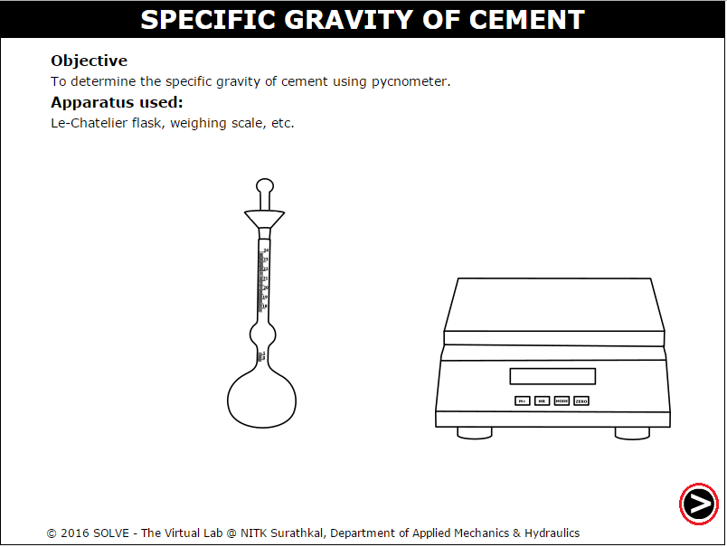
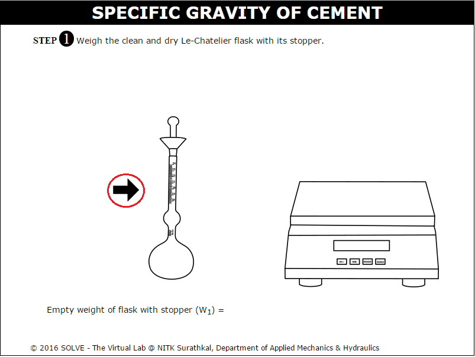
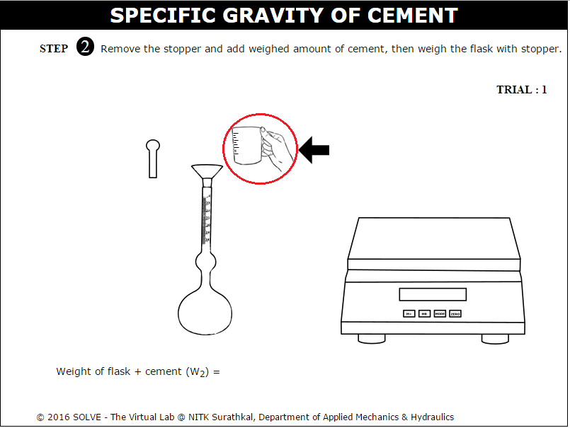
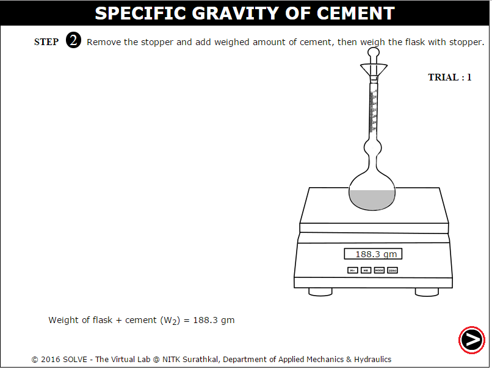
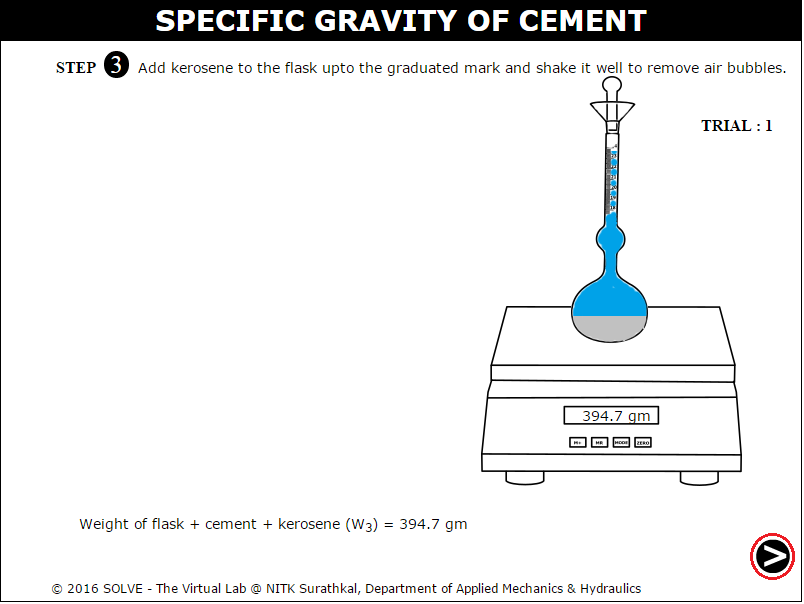
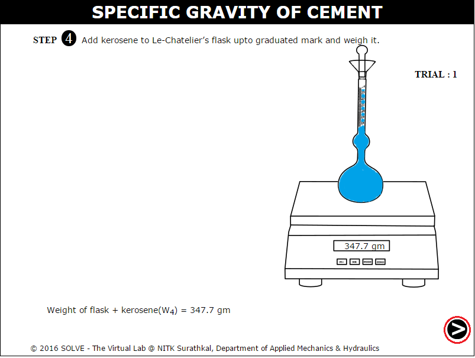
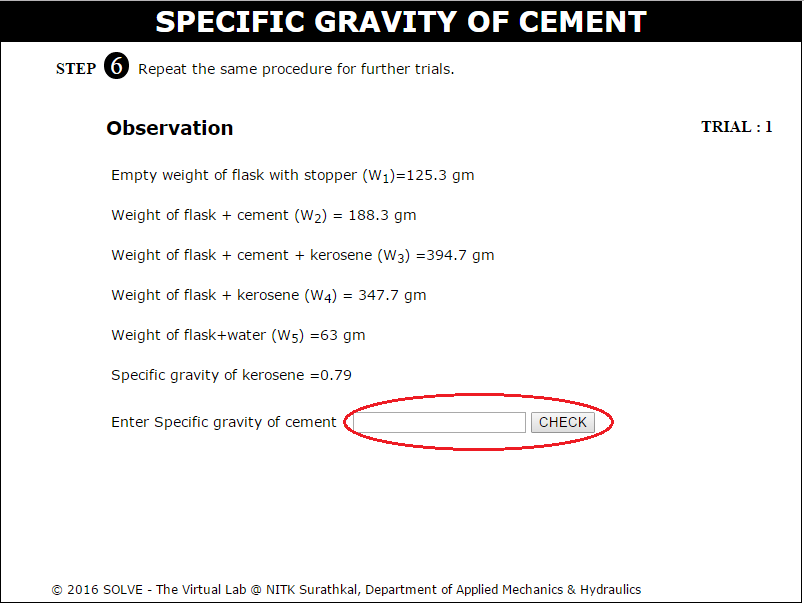

Specific gravity is ratio of weight of a volume of a particular material to the weight of the same volume of water at a specified temperature.
Every material has solid particles and pores which may contain water in it. Normally nominal mix design is based on the value of specific gravity of cement as 3.15. The value will change over time if the cement is exposed to various weather conditions. So it is essential to determine the specific gravity of cement before using it. We all know that water cement ratio is an important factor which is directly proportional to workability and the strength of a bonding. If the cement has already more moisture in it then, the value of water cement ratio will actually affect the workability and strength rather than increasing it. If the specific gravity of cement is greater than 3.19 then, the cement is either not minced finely as per the industry standard or it has more moisture content which will affect the mix and bonding.
Standard Le-Chatelier flask conforming to the dimensions shown in figure is used to determine specific gravity of cement. The samples of the cement shall be taken in accordance with the requirements of IS : 3535-1986 and the relevant standard specification for the type of cement being tested.

Standard Le-Chatelier Flask
Relevant Standard : IS 4031 (Part II) - 1988, METHODS OF PHYSICAL TESTS FOR HYDRAULIC CEMENT.

Objective:
To determine the specific gravity of cement.
Steps:
- When you open specific gravity of cement experiment, a window will open as shown. Click on NEXT Button at the bottom right corner.
 - Click on Le-Chatelier flask to place it in a weighing machine.
 - Here the empty weight (W1) of the flask will be obtained, then click NEXT Button

- Now click on the stopper to open it and then click on hand with cement setup to add cement (almost 64g) into the flask.
 - Click on the stopper again to place it in its position and then click on Le-Chateliers flask to place it on weighing machine, ie (W2),
then click NEXT Button.
 - Now open the stopper by clicking on it then click on beaker to pour kerosene into it (W3).
 - Repeat the above steps and add only kerosene to the flask (W4), then Click NEXT Button.
 - Same way add water to the flask and then click on it to place it in weighing machine (W5).

- Click Next to get the observation and then enter the calculated specific gravity value.
 - Repeat the same steps in further trials to get the average specific gravity of cement.


- How the specific gravity of cement affects the concrete mix design?
- Does the specific gravity of cement varies for different types of cement? Explain.
- What is the role of cement composition on specific gravity?


IS 4031 (Part II) - 1988, Methods of Physical Tests for Hydraulic Cement.
M.S. Shetty, Concrete Technology, S. Chand publications, 2009.
M.L. Gambhir, Concrete Technology, Tata McGraw-Hill Education, 2004.
Miller, R. W., Flow Measurement Engineering Handbook, Second Edition, McGraw-Hill, 1989.